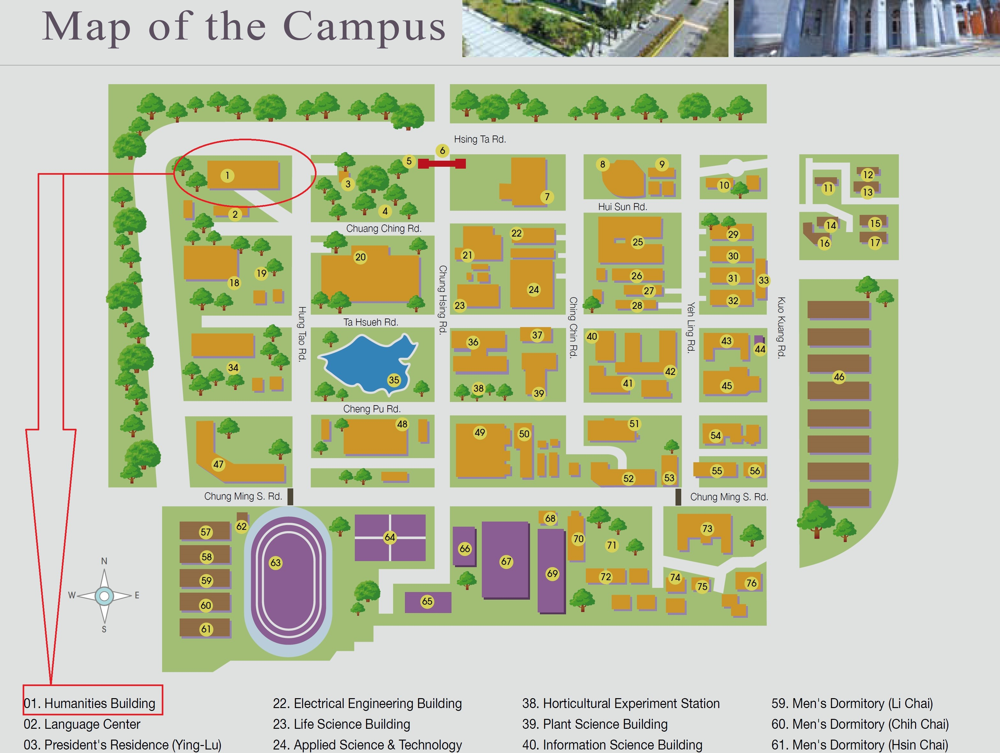
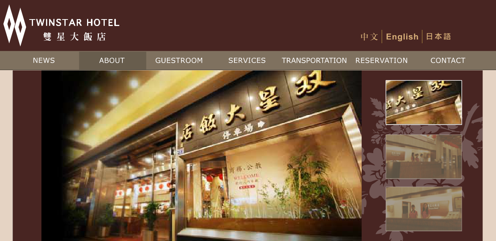
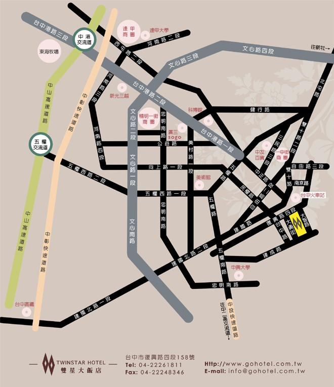
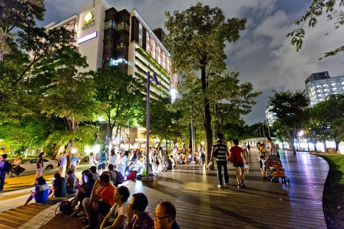

This symposium aims to bring together a group of (inter)national scholars to focus on the different forms of disposable life, human and nonhuman, in East and West, in a time when the humanities are under critique. To examine life at the threshold is to inquire after the different ways in which lines of demarcation are drawn, in the East and the West, between inclusion and exclusion of life, based on the rules imposed by sovereign power. As social and technological progress became identified in the wake of the Enlightenment, the exercise of rationality, instead of achieving autonomous freedom, fell prey to an anthropocentric narcissism that subordinates all life to the imperative of human survivorship. From modern industrialization to postmodern informatization and contemporary digitalization in 21st century, successive modes of social production have rendered life itself vulnerable gradually to the economic “sovereign power.” As Derrida observes in The Beast & the Sovereign I, the “criminal, beast, and sovereign strangely resemble each other.” On the other hand, Antonio Negri and Michael Hardt show how the exploited and excluded multitude can resist the authoritarian power of neoliberalism by assuming the force of monstrosity.
In addressing these issues, it is worthwhile to return to Michel Foucault’s famous assertion that a society’s “threshold of modernity” has been reached when the life of the species is wagered on its own political strategies. For millennia, man remained what he was for Aristotle: a living animal with the additional capacity for a political existence; modern man is an animal whose politics places his existence as a living being into question.” The full weight of this proposition becomes apparent only once we understand “existence” in the etymological sense of “standing out” or “standing apart” – that is to say, as referring not only to an ontological state, but also to a relationship: the advent of biopolitics transforms the human by rendering problematic its relationships to what is not human. While much of the debate about biopolitics has focused on the latter’s consequences for human beings, what has received less attention is the extent to which the whole panoply of strategies for securing, controlling, and optimizing human life is predicated on the understanding that human life is contiguous with and contingent upon other forms of life. The ways of “making live” and “letting die” which constitute modern biopolitics were thereforenever targeted onlyat humans, but at all sorts of life forms with which humans co-exist and co-evolve, be they prokaryotic or eukaryotic, vegetalor animal, wild or domestic. This is precisely the reason why the distinction between the human and the animal, as a semantic and material apparatus separating those beings who count as political subjects from those who do not, could become such a matter of contention.
One question this conference seeks to answer, then, is how our understanding of biopolitics needs to change if we conceive of it as a formation that is crucially concerned not with human life as such, but rather with the relationships between the human and the nonhuman, with the thresholds that both separate and join them.Yet this question, we wish to argue, cannot be addressed without also putting at issue Foucault’s characterization of biopolitics as marking the threshold to modernity. In the background of this claim lies a long tradition of thinking about modernity in terms of processes of secularization and disenchantment. The advent of biopolitics, thiswould suggest, is hitched tothe advance of instrumental rationality and the concurrent expulsion of the myriad of spirits, local deities and nonhuman forces which, prior to modernization, inhabited the world, enabling and constraining human action. Biopolitics subordinate life to a calculus of expediency in which the experience of the sacred contracts into the isolated figure of what Giorgio Agamben has described as “bare life.” Yet such a monolithic historical narrative is unable to account for the many different local inflections of the biopolitical. Like the belief that modernization must entail secularization, the notion of a singular threshold to modernity is based on a narrowly Eurocentric view of history. Across East Asia, for example, practices such as traditional Chinese medicine, geomancy, or Qi-Gong, for example, flourish within the framework of neoliberal consumer capitalism, even though they place the threshold between the human and the nonhuman in ways that arefundamentally at odds with the contemporary life sciences. Even within the “Western” world, old and new forms of animism are resurgent, and receive theoretical support from a growing cohort of new materialist and neo-vitalist scholars. Rather than dismissing such developments as pre-modern holdovers, we argue that they need to be theorized as distinctive biopolitical formations.
Topics to be addressed include, but are not limited to, the following:
- biopolitics / thanatopolitics
- posthuman ethics / aesthetics
- animality / zoopolitics
- sovereignty / bestiality
- plants / vibrant matter
- multitude / monstrosity
- madness / medication
- precarious life / violence
- climate change / food insecurity
- neoliberalism / democracy
- geomancy / animism
Organizing committee:
- HannesBergthaller, National Chung-Hsing University
- Jiann-guang Lin, National Chung-Hsing University
- Emily ShuHui Tsai, National Chung-Hsing University
- Robin Chen-Hsing Tsai, Tamkang University
- Sun-Chieh Liang, National Taiwan Normal University
Coordinators: Emily ShuHui Tsai and HannesBergthaller
under construction
Keynote Speakers:
- Gregg Lambert, Syracuse University, USA
- Daniel W. Smith, PurdueUniversity, USA
- Ian Buchanan, Wollongong University, Australia
- HannesBergthaller, National Chung-Hsing University, Taiwan
- Ian Buchanan, Wollongong University, Australia
- Chih-Yung Aaron Chiu, United International College, Hong Kong-China
- Rockwell Clancy, University of Michigan-Shanghai Jiao Tong University Joint Institute, China
- Juo-jiun Gung, Tainan National University of Arts, Taiwan
- Jun-Honn Kao, Tainan National University of Arts, Taiwan
- Gregg Lambert, Syracuse University, USA
- Alex Taek-Gwang Lee, Kyung Hee University, Republic of Korea
- Jiann-guang Lin, National Chung-Hsing University, Taiwan
- Sun-chieh Liang, National Taiwan Normal University, Taiwan
- Cheryl Lousley, Lakehead University, Canada
- Adeline Johns-Putra, University of Surrey, UK
- Daniel W. Smith, PurdueUniversity, USA
- Emily Shu-Hui Tsai, National Chung-Hsing University, Taiwan
- Robin Chen-Hsing Tsai, Tamkang University, Taiwan
- Jing Wu, Hohai University, China
- Peter Zhang, Grand Valley State University, USA
- HannesBergthaller, National Chung-Hsing University, Taiwan
- Daniel W. Smith, PurdueUniversity, USA
- Robin Chen-Hsing Tsai, Tamkang University, Taiwan
- Hanping Chiu, Tamkang University, Taiwan
- Sun-chieh Liang, National Taiwan Normal University, Taiwan
- Gregg Lambert, Syracuse University, USA
- Adeline Johns-Putra, University of Surrey, UK
- Emily ShuHui Tsai, National Chung-Hsing University, Taiwan
- Ya-lan Chang, Huafan University, Taiwan
- Li-Chun Hsiao, National Taiwan University, Taiwan
For those invited scholars, to get from Taoyuan international airport to Taichung, you could either get to Terminal 1 to take airport shuttle bus to reach the Taoyuan high speed rail station (HSR) to take the train, or you can take the bus directly heading toward Taichung which will take you one hour and 30 minutes. When you take the high speed rail to Taichung, which takes about 30-40 minutes, depending on which train you take (the fare for this should be 515 NT$), please take a taxi to your hotel (this should cost roughly 240 NT$). The taxi stand is on the ground floor, below the entrance hall, so you have to go down one escalator. Don’t worry about getting cheated – taxi drivers in Taiwan are generally upstanding citizens. Please keep your receipts (both high speed rail and taxi), we will need them to reimburse you the first day of the international symposium. On the days of the symposium, transportation from the hotel to Chung-Hsing University will likewise be by taxi and keep the receipt of the taxi fare and we will reimburse you too. We recommend that the invited scholars staying at Twinstar Hotel (雙星大飯店) could share the taxi (2 or 3 or 4 people in one taxi) to National Chung Hsing Unversity.
This is the address of the hotel , which you might want to print out so as to show to the taxi drivers:
Twinstar Hotel (雙星大飯店)
No. 158, Sec. A, Fusing Rd., Taichung City, Taiwan (台中市復興路四段158號)
大會地點
Conference Venue
國立中興大學
National Chung-Hsing University
台中市南區興大路145號 國立中興大學人文大樓
National Chung Hsing University,Humanities Building
145 Hsingda Rd., South Dist., Taichung City 402, Taiwan
Tel. 04-22873181

Route plan Taoyuan Airport to Taichung
(1)Taoyuan Airport to Taiwan High Speed Rail (HSR) Taoyuan Station
(2)Taiwan High Speed Rail (HSR) Taoyuan Station to Taichng
High speed rail. Fare NT$515, travel time 36 minutes.
HSR
(3)Taiwan High Speed Rail (HSR) Taichung Station to Twinstar Hotel
Taxi

雙星大飯店
Twinstar Hotel
台中市復興路四段158號
Address: No. 158, Sec. A, Fusing Rd., Taichung City, Taiwan
Tel:04-22261811
Fax:04-22248346
Official Website

景點旅遊
Travels

誠品綠園道
Park Lane by CMP
台中市西區公益路68號
No.68, Gongyi Rd., West Dist., Taichung City 403, Taiwan
 Life at the Threshold：Biopolitical, Posthuman, Nonhuman
Life at the Threshold：Biopolitical, Posthuman, Nonhuman